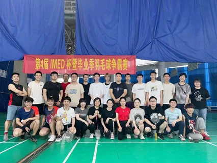
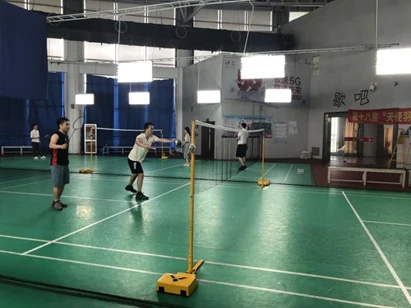
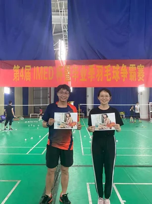

在初夏的的慈溪体育场，第四届IMED杯暨毕业季羽毛球争霸赛拉开了序幕。本次参加双打比赛12只队伍共分为了A，B，C三组，每支队伍在组内要进行三场比赛，胜场多的两个小组将进入胜者，后两个小组将进入复活赛。A组为本次比赛的死亡小组，不仅有牟磊双冠王带领的神兵队，还有赵一天老师和谢建洋组成的无敌队，冲锋队的王兴国实力也不容小觑。B组实力比较强的是由郝晋奎和赵劲宇组成的雄鹰队，还有马煜辉和徐聪组成的野狼团，但其他队伍也跃跃欲试。在C组郭家琦和郁帅组成的麒麟队一枝独秀，但是由阎岐峰和蒋珊珊组成的染发天团也已训练已久，对冠军也虎视眈眈。

随着一声哨响，比赛也正式开始了。三个小组在三个场地为出线的名额展开了激烈的拼搏，挥拍的呼啸声不断地在耳边响起，呐喊声也此起彼伏。

在经过一个多小时的激战，有六只队伍提前进入了淘汰赛，分别为A组的神兵队和无敌队，B组的雄鹰队和野狼团，还有C组的染发天团和麒麟队。在随后的复活赛中冲锋队和明日星队获得了最后的8强名额。第一轮淘汰赛之后实力更强的神兵队，无敌队，雄鹰队，明日星队这四只队伍杀入了四强。在四强的比赛中，双冠王牟磊带领的神兵队不出所料的进入到了决赛，雄鹰队也击败了明日星进入了最终决赛。
决赛对决的双方分别是在小组赛和淘汰赛一往无前未尝一败的神兵队，以及强势晋级决赛的雄鹰队。在决赛上双方都卯足了劲，比分也是十分焦灼，你追我一分，我追你一分。但终是关山难越，雄鹰队憾负神兵队，神兵队取得本次双打赛事的冠军。雄鹰队、无敌队分别获得亚军和及季军。

文/方利鑫； 图/田云彤